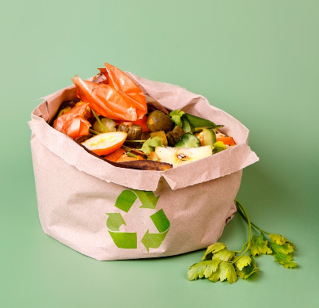
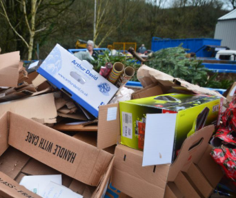
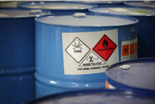

¿Por qué es importante el manejo adecuado de residuos?
El manejo adecuado de los residuos contribuye a proteger el medio ambiente, reducir la contaminación y preservar los recursos naturales. Además, ayuda a prevenir enfermedades y mejora la calidad de vida en nuestras comunidades.
Clasificación de Residuos
Residuos Orgánicos
Son los residuos biodegradables, como restos de comida, cáscaras de frutas y vegetales. Pueden convertirse en compost.
Residuos Reciclables
Incluyen papel, cartón, plástico, vidrio y metales. Estos materiales pueden ser procesados y reutilizados.
Residuos Peligrosos
Son residuos que representan un riesgo para la salud o el medio ambiente, como baterías, aceites y productos químicos.
¿Qué son los residuos orgánicos?
Los residuos orgánicos son desechos biodegradables de origen vegetal o animal que pueden descomponerse en la naturaleza sin demasiada dificultad y transformarse en otro tipo de materia orgánica.
¿Sabías que puedes crear abono orgánico de primera calidad en tu propio hogar? Tan solo necesitas un recipiente, un lugar protegido del sol y los restos orgánicos que se generan en el día a día, como sobras de frutas y verduras, posos de café u hojas secas. Después, solo tienes que dejar que los microorganismos hagan su trabajo y en pocos meses obtendrás un compost oscuro y terroso estupendo para abonar las macetas de tu hogar.
Durante siglos, los agricultores utilizaron estos restos orgánicos para mantener la fertilidad de sus campos. Esta práctica se basaba en imitar los procesos de la naturaleza de descomposición y reciclaje orgánico de la materia en el suelo, donde los nutrientes se liberan y vuelven a ser absorbidos por las plantas.
En la actualidad, el impacto climático de nuestra basura tiene más importancia de la que nos imaginamos. El sector de los residuos es uno de los tres principales emisores de metano, con alrededor del 20 % de las emisiones de metano provocadas por el hombre en todo el mundo. Reducir rápida y significativamente la contaminación por metano es una de las oportunidades más importantes que tenemos para frenar el ritmo del calentamiento global en las próximas dos décadas. Afortunadamente, hoy disponemos de soluciones rentables para reducir las emisiones de metano del sector de los residuos, sobre todo de aquellos de origen orgánico, como el consumo responsable o el reciclaje para su tratamiento y transformación en materiales biodegradables.
Tipos de residuos orgánicos
- Restos de comida: como cáscaras de huevo o frutas, semillas, aceite, huesos, vegetales. También incluyen desperdicios de la preparación de las comidas o de la manipulación y elaboración de alimentos, los restos de comida, alimentos en mal estado y los excedentes alimentarios que no se han comercializado o consumido (separados de su envase).
- Utiliza bolsas biodegradables o recipientes reutilizables para almacenar tus residuos.
- Involucra a tu familia y comunidad en la gestión responsable de residuos.
- Recicla correctamente siguiendo las instrucciones locales.
- Evita el uso de plásticos de un solo uso y opta por alternativas sostenibles.

Consejos para el Manejo de Residuos
- Separa los residuos en orgánicos, reciclables y peligrosos desde la fuente.
- Utiliza bolsas biodegradables o recipientes reutilizables para almacenar tus residuos.
- Involucra a tu familia y comunidad en la gestión responsable de residuos.
- Recicla correctamente siguiendo las instrucciones locales.
- Evita el uso de plásticos de un solo uso y opta por alternativas sostenibles.
Recursos Adicionales
Consulta más información sobre reciclaje y gestión de residuos en los siguientes enlaces: